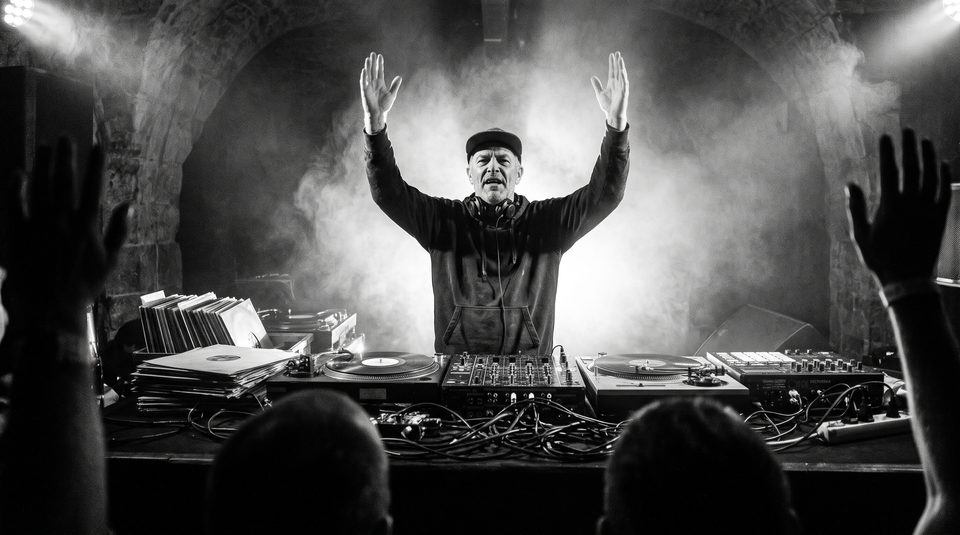

Palcos & Morfismo de Formas ↗
Morfismo fluido de secções poligonais com clip-path: polygon(...) e invariância estrita de vértices ($N=8$).
Três dias de polirritmia pura, batalhas de bateristas, sintetizadores analógicos e mestres internacionais nas margens históricas do Rio Douro.

Repare na barra colorida no topo da janela: ela avança proporcionalmente à leitura sem precisar de uma única linha de JavaScript. Esta técnica liga os keyframes do CSS diretamente à barra de rolagem através da propriedade animation-timeline: scroll(root).
/* 1. Barra de Progresso Global do Viewport */
.viewport-progress-fill {
block-size: 100%;
inline-size: 100%;
background: linear-gradient(90deg, #ff4520, #f59e0b, #00d2ff);
transform-origin: 0 50%;
animation: grow-progress 1ms linear;
animation-timeline: scroll(root); /* Vinculado ao scroll da página */
}
@keyframes grow-progress {
from { transform: scaleX(0); }
to { transform: scaleX(1); }
}Cada página do website concentra-se e documenta em profundidade um padrão interativo moderno de CSS:
Morfismo fluido de secções poligonais com clip-path: polygon(...) e invariância estrita de vértices ($N=8$).
Caixa de discos em 3D realista com perspective: 1200px, abertura em leque com seletores adjacentes e reprodutor áudio.
Impulso percussivo a navegar caminhos SVG curvos com offset-path e física de ressalto linear(...).
Acordeões semânticos nativos <details> com animação suave de altura usando @starting-style.
Animações de entrada reveladas à passagem do scroll com view() e carrossel tátil com scroll-snap.
Máquina de estados finitos puramente CSS com :has() para cálculo de preço ao vivo e janela modal <dialog>.
Tokens cromáticos com light-dark(), cartões responsivos a contentores @container e auditoria WCAG.